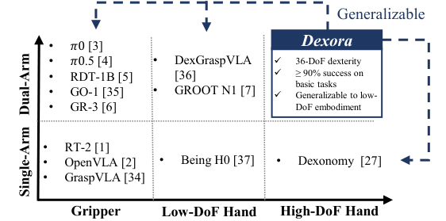
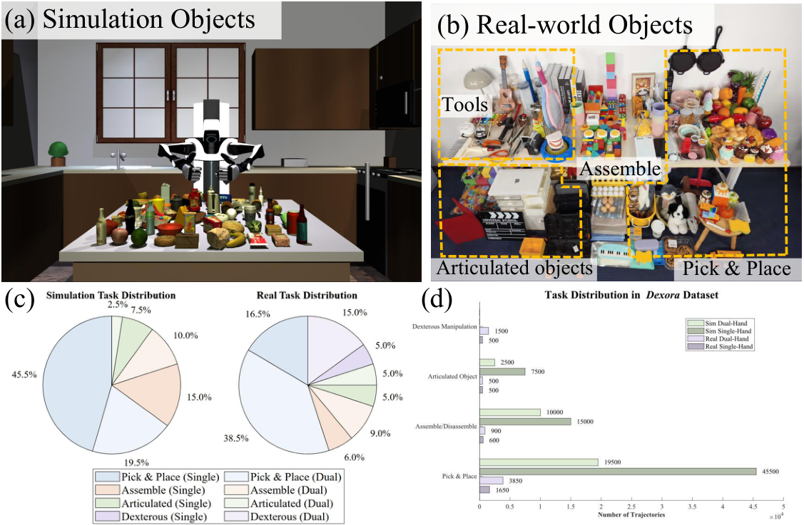
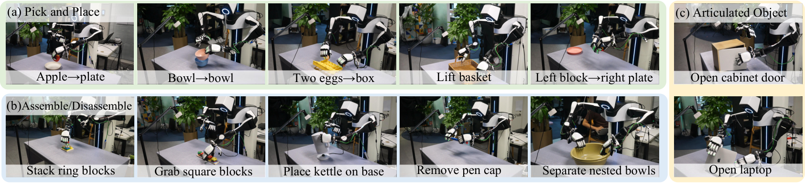
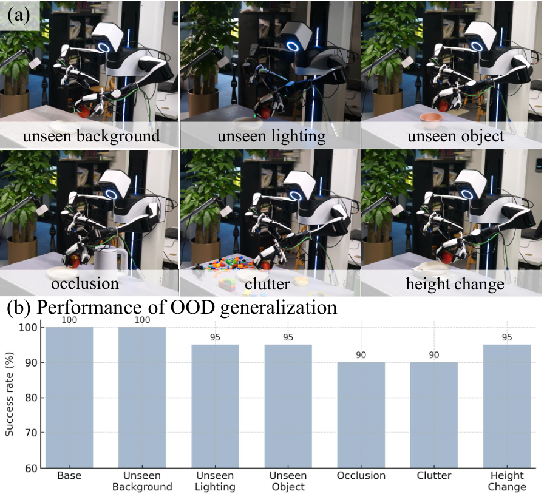
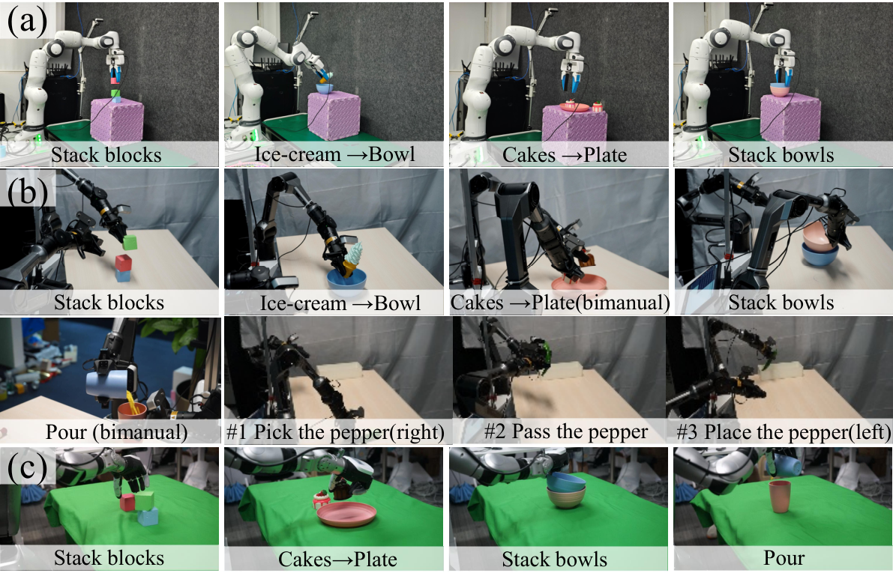
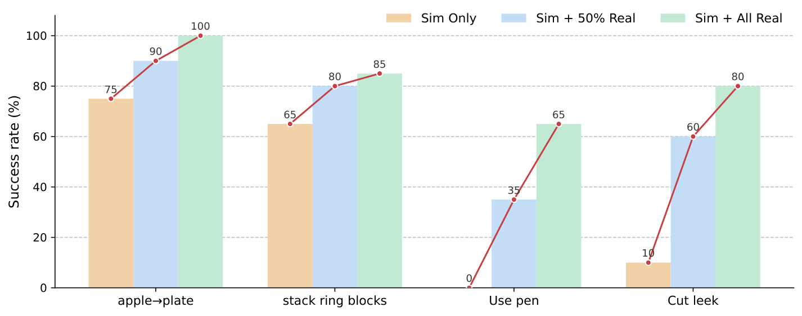
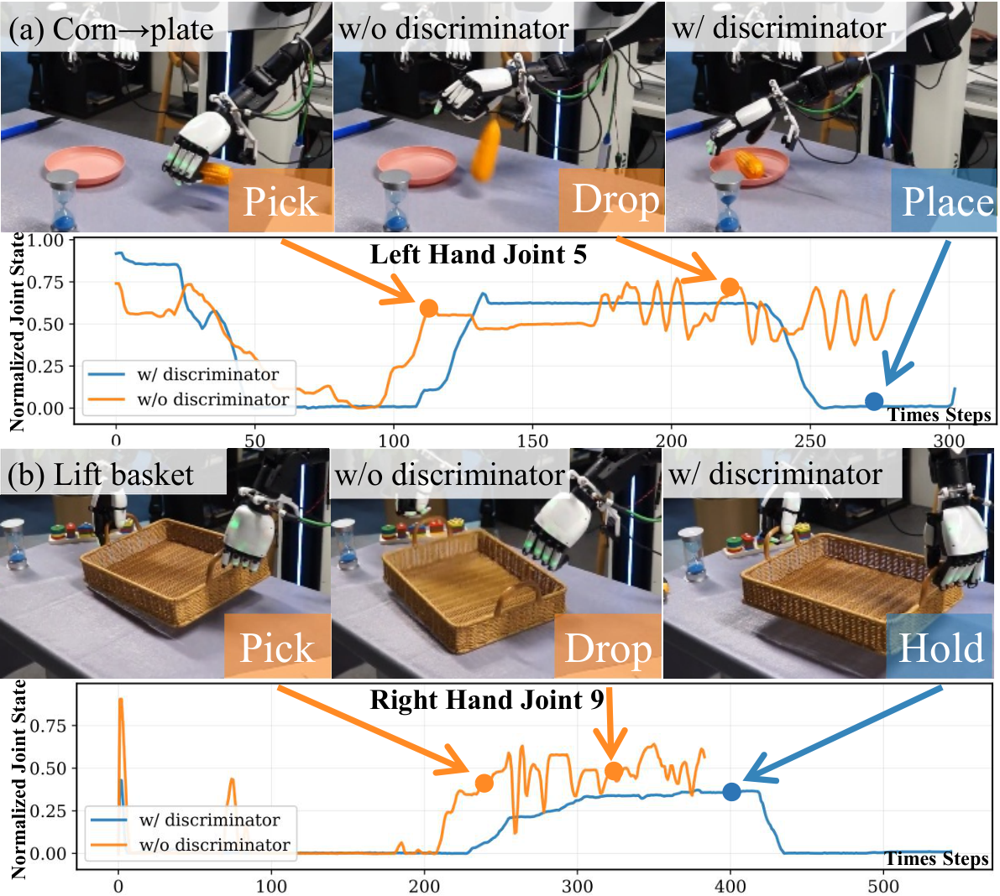

fig:teaser. \textbfDexora overview. (a) Motivation: Three illustrative contrasts highlight the need for dual-arm, dual-hand dexterous VLA: piston insertion (requires two arms), book retrieval from a packed shelf (hands with fingers succeed where grippers fail), and bottle opening (12-DoF fingers with lateral swing outperform 6-DoF). (b) Dataset (§sec: method-dataset): We pretrain on 100K simulated bimanual-hand trajectories and post-train on 10K real demonstrations, all collected with our dual-arm, dual-hand platform. (c) Architecture (§sec: method-framework): A trained discriminator scores dataset demonstration quality and guides training, driving the diffusion-transformer policy to prioritize high-quality trajectories while down-weighting low-quality ones. (d) Performance (§sec: real world results): Dexora achieves consistently higher average success rates on both basic (Pick-and-Place, Assemble/Disassemble, Articulated Object) and dexterous benchmarks compared to state-of-the-art VLA models. (e) Embodiment generalization (§sec: generalization): The same policy transfers across single-arm gripper, dual-arm grippers, and single-arm low-DoF hand without re-architecting the model. \vspace-10pt

fig:intro-6areas. Comparison of embodiment coverage. Prior works cover either single-arm or low-DoF dual-arm settings. Dexora is the first system positioned in the dual-arm, high-DoF dexterous region, while also generalizing across simpler embodiments without re-architecture.
fig:hard-tele. Hardware and teleoperation system. (a) Hybrid teleoperation interface and 12-DoF XHAND. (b)-(c) The operator teleoperates the physical robot and its MujoCo digital twin, so apple\rightarrowplate demonstrations are collected in real and simulation under the same interface, thereby reducing the sim-to-real gap. \vspace-10pt

fig:dataset demonstration. Dataset demonstration. (a) Simulation objects subset: our simulator includes 297 objects across 30 categories. (b) Real-world objects (347 objects, 17 categories), covering both basic and dexterous use cases. (c) Per-family task distribution in simulation vs. real. The simulation data only includes basic tasks, while the real-world set shifts weight toward dexterity (20\ \vspace-20pt
fig:method. \textbfDexora framework. (a) Data filtering: From the real-world dataset we pre-screen demonstrations by kinematic smoothness (low acceleration and jerk), then replay them for post-validation and keep the clips that complete the task without collisions, forming a high-quality subset. (b) Discriminator training: With the pretrained diffusion–transformer policy frozen, we compute a log-\pi proxy for each clip and train a discriminator that, conditioned on observations and language, outputs a quality score d(C_t)\in(0,1]. (c) Data-quality-aware post-training: During post-training, the score d(C_t) is converted to weights w_i and used in the diffusion loss L_\pi. At inference time, only the policy is used. \vspace-10pt

fig:basic tasks. Basic tasks suite. (a) Pick and Place (5 tasks). (b) Assemble/Disassemble (5 tasks). (c) Articulated Objects (2 tasks).
fig:dex_manipulation. Dexterous manipulation sequences. (a) Use Pen: The left hand picks up the pen (\#1), hands it to the right hand (\#2); the right thumb depresses the tip (\#3) and writes on paper (\#4). (b) Cut Leek: The right hand grasps the knife (\#1), the left hand stabilizes the leek (\#2); the right hand slices (\#3) and returns the knife to the table (\#4). (c) Rough Dough: Both hands press the rolling pin simultaneously (\#1) and push forward to flatten the dough (\#2). (d) Twist Cap: The left hand holds the bottle while the right thumb–index grip twists the cap (\#1) and removes it (\#2). \vspace-10pt

fig:OOD. Generalization of six Out-of-Distribution (OOD) conditions. We report success rate (\ fig:OOD \vspace-0.5cm

fig:cross-embodiment-gen. Cross-embodiment generalization. The Dexora policy transfers to (a) single-arm gripper, (b) dual-arm grippers, and (c) single-arm single-hand, completing representative tasks like a three-step pepper handover. 2em

fig:scaling. Effect of training data composition. Success rate for four tasks under three training regimes: Sim Only, Sim + 50\ \vspace-20pt

fig:discriminator. Effect of the data-quality discriminator. (a) Corn \rightarrow plate: with the discriminator, joint trajectories are smooth and the placement succeeds; without it, high-frequency oscillations in left-hand joint 5 cause the corn to drop. (b) Lift basket (bimanual): with the discriminator, the basket is lifted; without it, jitter in right-hand joint 9 tilts the basket and it slips.2em \vspace-15pt